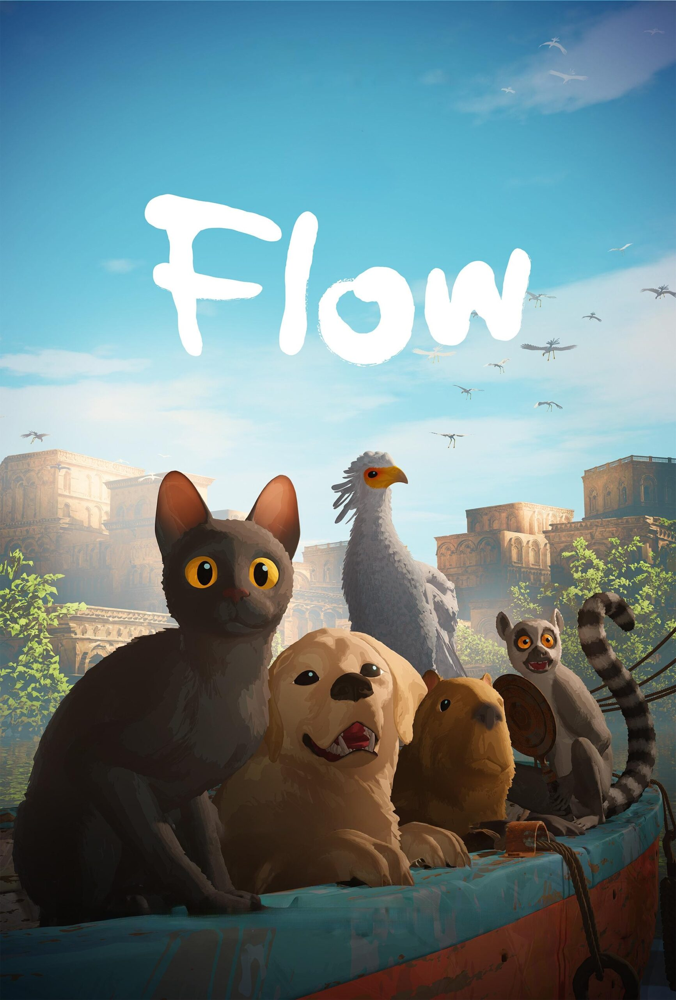

Haz clic acá para ver el trailer
Reseña: Una historia épica de vikingos y dragones donde un joven desafía las reglas de su aldea para hacerse amigo de un dragón peligroso, descubriendo el valor de la amistad y la compasión en medio de batallas y vuelos emocionantes.

Haz clic acá para ver el trailer
Una película de animación sin diálogos sobre un gato que, tras una gran inundación, se une a otros animales para sobrevivir en un mundo inusual y peligroso, mostrando aventura, cooperación y mucha emoción visual.

Haz clic acá para ver el trailer
Un grupo de personas intenta sobrevivir cuando criaturas alienígenas sensibles al sonido atacan sin aviso,
obligándolos a ser silenciosos para escapar del peligro.

Haz clic acá para ver el trailer
La reinvención del clásico superhéroe que combina acción y esperanza,
siguiendo las aventuras del Hombre de Acero mientras protege la humanidad con valentía y corazón.

Haz clic acá para ver el trailer
Una épica de ciencia ficción en un planeta desértico donde Paul Atreides lucha por liderar a un pueblo mientras enfrenta profecías,
peligros y decisiones que cambiarán su destino.

Haz clic acá para ver el trailer
Los icónicos héroes Marvel trabajan juntos para enfrentar una amenaza cósmica,
combinando acción y trabajo en equipo en una aventura retrofuturista llena de poderes y desafíos.